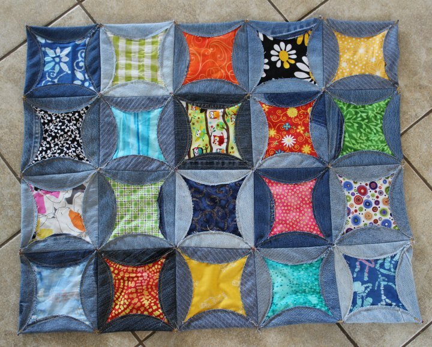
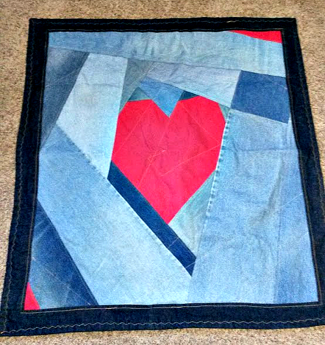

I love denim because it is recycleable, beautiful, and durable.
-
You never have to let a favorite pair of jeans go to waste. You can create useful and uniquely beautiful things by re-purposing old denim.
-
Because of the unique wear of each article of clothing, denim develops special patterns that are interesting and cool.
-
Denim is simple to clean and easily washable. By its nature, denim is durable and can take some punishment.

This is a project where I created a denim quilt by cutting out circles and then stitching them together.
This is a project where I created a heart baby blanket by creating a pattern and then sewing the pattern pieces together.